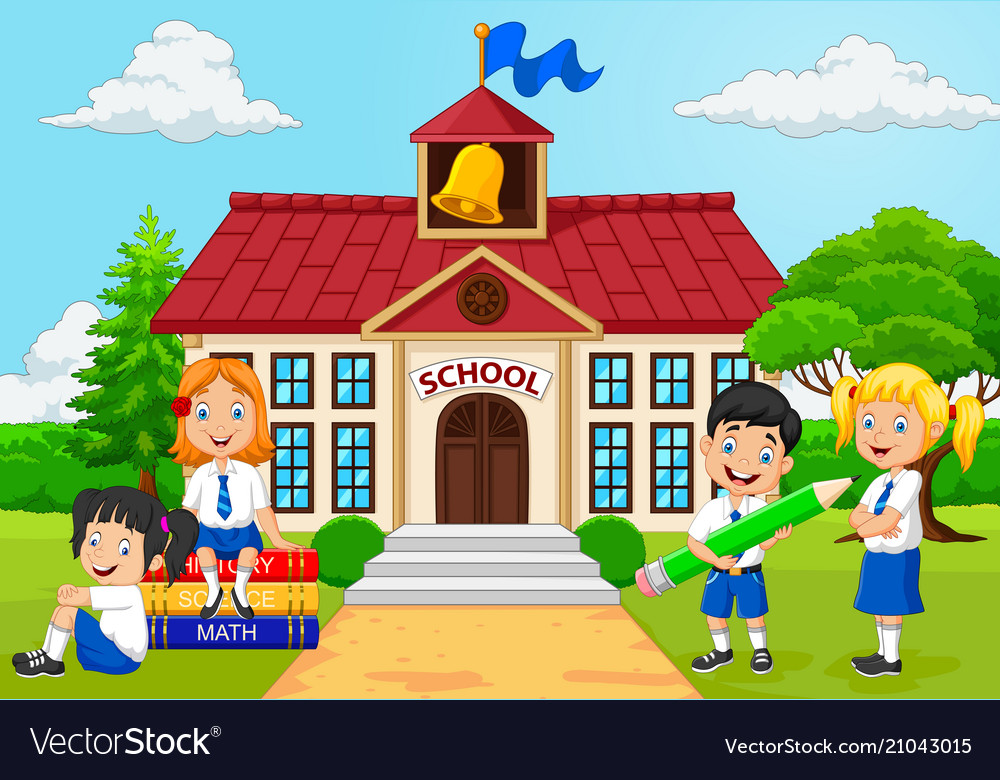
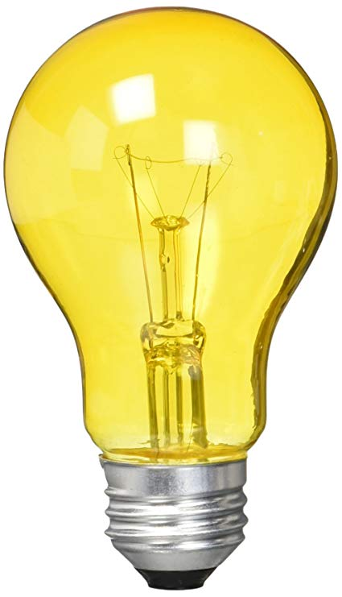

Dobrodošli na IT Bootcamp!
| Početna | Kursevi | Kontakt |
|---|
| Misija | Cilj | Vizija |
|  |  |
 |
| Naša misija je otvaranje mogućnosti napretka motivisanim pojedincima i povećanje produktivnosti sprske privrede kroz kvalifikovanu IT radnu snagu. | Škola pruža besplatno znanje populaciji koja nije imala priliku za formalno IT obrazovanje. Kursevi su fokusirani na praktičnu primenu da bi povećali plasman polaznika na radna mesta. | Da omogućimo lak pristup IT znanju i fer šansu motivisanim pojedincima koji će doprineti da IT industrija Srbije postane regionalni lider. |
Naši kursevi
- Beograd
- Testiranje softvera
- Razvoj web stranica
- Osnove programiranja (Java)
- Niš
- Razvoj web stranica
- Testiranje softvera (QA)
Kontakt informacije
Fondacija Ana i Vlade Divac
Ilije Grasanina 53a/711120 Beograd, Srbija
www.divac.com